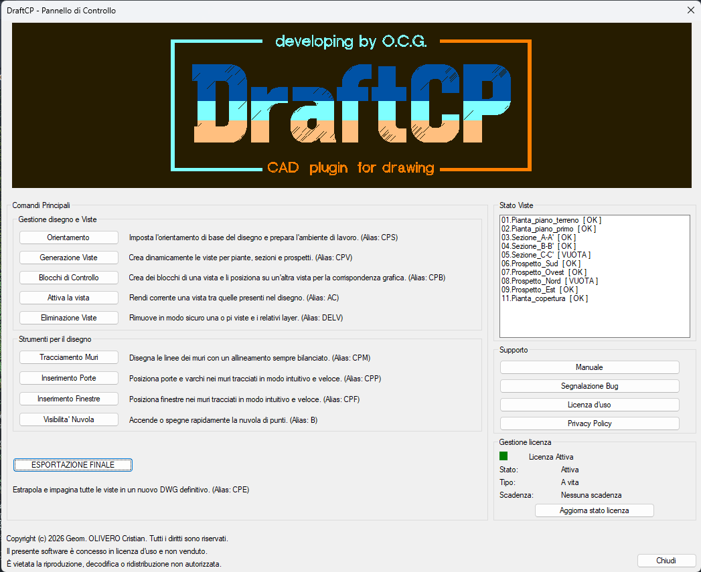

Dashboard
Il centro di controllo del progetto. Visualizza tutte le viste create, naviga tra i piani e accedi a tutti i comandi da un'unica finestra.
DraftCP è il plug-in AutoCAD che automatizza la restituzione 2D dei tuoi rilievi: gestione delle viste, tracciamento dei muri con tolleranze geometriche, inserimento intelligente di porte e finestre. Sviluppato da un geometra, per i professionisti.

Perché DraftCP
Un geometra che ha cercato — e non trovato — lo strumento giusto per lavorare sulle nuvole di punti. Così ha deciso di costruirlo.
Dal 2019 lavoro con le nuvole di punti. Ho cercato a lungo uno strumento che mi aiutasse a fare questo lavoro in modo più rapido, più preciso e meno ripetitivo — non un software che generasse i disegni in automatico, ma uno che mettesse nelle mie mani le operazioni giuste al momento giusto.
Online non trovavo niente di adeguato: o troppo costoso, o troppo automatizzato per garantire il controllo su quello che si consegna, o semplicemente non progettato per il disegno tecnico bidimensionale. Eppure il disegno CAD 2D è ancora oggi il sistema più utilizzato negli studi tecnici per consegnare piante, per le pratiche edilizie e catastali.
Così ho iniziato a studiare AutoLISP — uno dei primi e più efficienti linguaggi di programmazione per l'ambiente CAD — e ho costruito i miei primi comandi, mettendoli a disposizione dei colleghi dello studio. Anno dopo anno, commessa dopo commessa, il codice è cresciuto.
Oggi DraftCP è il risultato di anni di lavoro sul campo, testato su centinaia di rilievi reali. Non sostituisce il professionista: lo affianca, eliminando le ore di operazioni ripetitive che — fatte a mano — rischiano anche di produrre errori di distrazione. Uno strumento sviluppato da un professionista come te.
Funzionalità
Ogni comando è progettato per un'operazione specifica, rapida e precisa. Dall'orientamento iniziale del progetto all'esportazione finale.
Il centro di controllo del progetto. Visualizza tutte le viste create, naviga tra i piani e accedi a tutti i comandi da un'unica finestra.
Imposta il sistema di riferimento del progetto rispetto alla nuvola di punti. Definisce l'UCS di base da cui vengono generate tutte le viste.
Crea le sezioni orizzontali (piante) della nuvola con layer system automatico e ordinato. Ogni vista è gestita su layer dedicati e indipendenti.
Passa da un piano all'altro con due tasti. Attiva vista, layer filter e punto di vista corretto in frazioni di secondo, senza usare il mouse.
Disegna muri in pianta con controllo automatico di parallelismo e ortogonalità rispetto all'UCS. Tolleranze lineari e angolari configurabili per ogni rilievo.
Inserisce la rappresentazione delle finestre in pianta con geometria dinamica adattata alla larghezza del muro rilevato. Layer automatici.
Inserisce porte in pianta con arco di apertura dinamico, dimensioni adattate al vano rilevato e gestione automatica dei layer dedicati.
Inserisce blocchi di riferimento e controllo per la verifica della coerenza geometrica del disegno rispetto alla nuvola di punti.
Rimuove una vista e tutti i layer associati mantenendo il disegno pulito e ordinato, senza layer orfani residui.
Accende e spegne la nuvola di punti istantaneamente con un tasto. Indispensabile per alternare rapidamente tra nuvola e disegno durante la restituzione.
Esporta le viste in file DWG separati e pronti alla consegna, con layer system ordinato e senza elementi residui della sessione di lavoro.
Come Funziona
DraftCP si integra nel tuo ambiente AutoCAD senza stravolgere il flusso di lavoro. In tre fasi, dalla nuvola grezza al disegno pronto alla consegna.
Importa la nuvola di punti in AutoCAD e usa CPS per orientare il sistema di riferimento del progetto. DraftCP si adatta al tuo rilievo, non il contrario.
Con CPV crei le sezioni orizzontali (piante) in pochi clic. I layer vengono creati e organizzati automaticamente. Naviga tra i piani con AC in tempo reale.
Tracci muri, porte e finestre con precisione geometrica garantita. Quando il disegno è pronto, CPE esporta file DWG puliti e pronti alla consegna.
Download
Il download sarà disponibile a breve. Il plug-in è compatibile con AutoCAD 2018 e versioni successive su Windows 10 e 11.
Chi Sono
"Cercavo uno strumento che non sostituisse il mio lavoro, ma che lo rendesse più rapido, più preciso e meno ripetitivo. Non trovandolo, l'ho costruito."
Mi sono avvicinato alle nuvole di punti nel 2019 e da allora ho costantemente ricercato metodi, strategie e soluzioni per un disegno corretto, ordinato e coerente — ma soprattutto per semplificare e automatizzare le operazioni necessarie.
Ho studiato AutoLISP, uno dei linguaggi di programmazione nativi per l'ambiente CAD, e ho sviluppato i primi comandi mettendoli a disposizione dei colleghi dello studio. Con gli anni ho visto crescere l'adozione dei laser scanner e la conseguente necessità di consegnare disegni in tempi sempre più brevi. DraftCP è la risposta a questa esigenza.
OCG.Software26@outlook.com